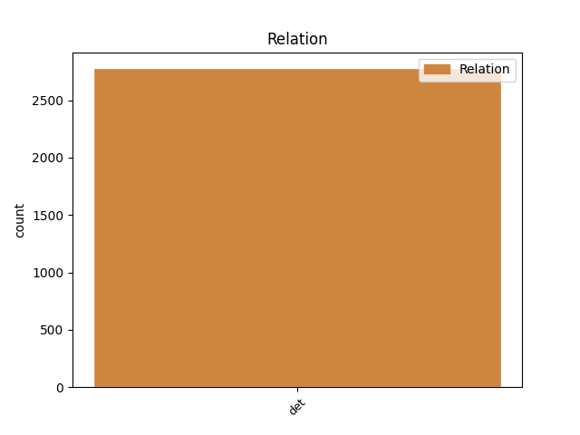
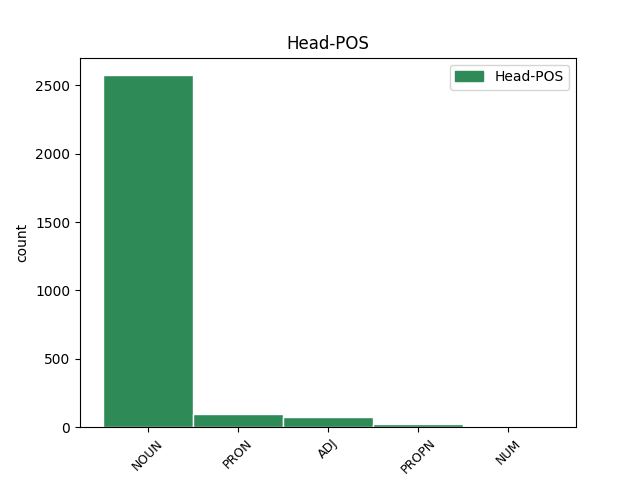
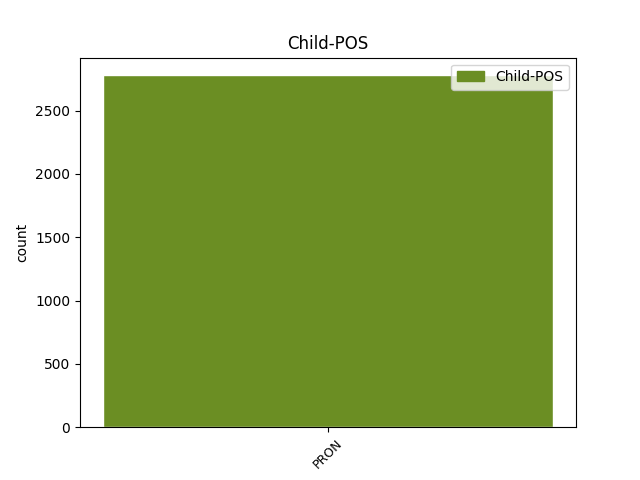

Distribution of features within this leaf



Agreement Rules sorted by frequency.
- When the dependent token is the determiner(det) of the head token, and the head token is NOUN and the dependent token is PRON.
1 Väkiluku _ _ _ _ 0 _ _ _
2 kasvoi _ _ _ _ 0 _ _ _
3 eniten _ _ _ _ 0 _ _ _
4 Uudellamaalla _ _ _ _ 0 _ _ _
5 , _ _ _ _ 0 _ _ _
6 Pirkanmaalla _ _ _ _ 0 _ _ _
7 ja _ _ _ _ 0 _ _ _
8 Pohjois-Pohjanmaalla _ _ _ _ 0 _ _ _
9 sekä _ _ _ _ 0 _ _ _
10 kahdeksassa _ _ _ _ 0 _ _ _
11 muussa muu PRON Pron Case=Ine|Number=Sing|PronType=Ind 12 det _ _
12 maakunnassa maa#kunta NOUN N Case=Ine|Number=Sing 0 _ _ _
13 ja _ _ _ _ 0 _ _ _
14 Ahvenanmaalla _ _ _ _ 0 _ _ _
15 , _ _ _ _ 0 _ _ _
16 joskin _ _ _ _ 0 _ _ _
17 niissä _ _ _ _ 0 _ _ _
18 vähemmän _ _ _ _ 0 _ _ _
19 kuin _ _ _ _ 0 _ _ _
20 kolmessa _ _ _ _ 0 _ _ _
21 edellämainitussa _ _ _ _ 0 _ _ _
22 . _ _ _ _ 0 _ _ _
1 Majuri _ _ _ _ 0 _ _ _
2 Sami _ _ _ _ 0 _ _ _
3 Aarnion _ _ _ _ 0 _ _ _
4 mukaan _ _ _ _ 0 _ _ _
5 Mikkosta _ _ _ _ 0 _ _ _
6 ei _ _ _ _ 0 _ _ _
7 ollut _ _ _ _ 0 _ _ _
8 varsinaisesti _ _ _ _ 0 _ _ _
9 kutsuttu _ _ _ _ 0 _ _ _
10 , _ _ _ _ 0 _ _ _
11 vaan _ _ _ _ 0 _ _ _
12 hän hän PRON Pron Case=Nom|Number=Sing|Person=3|PronType=Prs 0 _ _ _
13 itse itse PRON Pron Case=Nom|Number=Sing|Reflex=Yes 12 det _ _
14 oli _ _ _ _ 0 _ _ _
15 puolisen _ _ _ _ 0 _ _ _
16 vuotta _ _ _ _ 0 _ _ _
17 aikaisemmin _ _ _ _ 0 _ _ _
18 ollut _ _ _ _ 0 _ _ _
19 yhteydessä _ _ _ _ 0 _ _ _
20 Puolustusvoimiin _ _ _ _ 0 _ _ _
21 , _ _ _ _ 0 _ _ _
22 mutta _ _ _ _ 0 _ _ _
23 mitään _ _ _ _ 0 _ _ _
24 tehtäviä _ _ _ _ 0 _ _ _
25 hänelle _ _ _ _ 0 _ _ _
26 ei _ _ _ _ 0 _ _ _
27 ollut _ _ _ _ 0 _ _ _
28 osoitettu _ _ _ _ 0 _ _ _
29 . _ _ _ _ 0 _ _ _
1 Joka joka PRON Pron Case=Nom|Number=Sing 2 det _ _
2 toinen toinen ADJ Num Case=Nom|Derivation=Inen|Number=Sing|NumType=Ord 0 _ _ _
3 vuosi _ _ _ _ 0 _ _ _
4 pidettävien _ _ _ _ 0 _ _ _
5 laulukilpailujen _ _ _ _ 0 _ _ _
6 finaali _ _ _ _ 0 _ _ _
7 alkaa _ _ _ _ 0 _ _ _
8 sunnuntaina _ _ _ _ 0 _ _ _
9 kello _ _ _ _ 0 _ _ _
10 18.00 _ _ _ _ 0 _ _ _
11 ja _ _ _ _ 0 _ _ _
12 se _ _ _ _ 0 _ _ _
13 radioidaan _ _ _ _ 0 _ _ _
14 suorina _ _ _ _ 0 _ _ _
15 lähetyksinä _ _ _ _ 0 _ _ _
16 YLEn _ _ _ _ 0 _ _ _
17 radio _ _ _ _ 0 _ _ _
18 1:ssä _ _ _ _ 0 _ _ _
19 . _ _ _ _ 0 _ _ _
1 Kai Kai PROPN N Case=Nom|Number=Sing 0 _ _ _
2 Mäkelä _ _ _ _ 0 _ _ _
3 , _ _ _ _ 0 _ _ _
4 Rauno _ _ _ _ 0 _ _ _
5 Puolimatka _ _ _ _ 0 _ _ _
6 ja _ _ _ _ 0 _ _ _
7 Ahti _ _ _ _ 0 _ _ _
8 Vilppula _ _ _ _ 0 _ _ _
9 ovat _ _ _ _ 0 _ _ _
10 kaikki kaikki PRON Pron Case=Nom|Number=Sing|PronType=Ind 1 det _ _
11 kolme _ _ _ _ 0 _ _ _
12 julkisesti _ _ _ _ 0 _ _ _
13 kiistäneet _ _ _ _ 0 _ _ _
14 syyllistyneensä _ _ _ _ 0 _ _ _
15 mihinkään _ _ _ _ 0 _ _ _
16 . _ _ _ _ 0 _ _ _
1 Rauhaa _ _ _ _ 0 _ _ _
2 piti _ _ _ _ 0 _ _ _
3 yllä _ _ _ _ 0 _ _ _
4 muutama muutama PRON Pron Case=Nom|Number=Sing|PronType=Ind 5 det _ _
5 tuhat tuhat NUM Num Case=Nom|Number=Sing|NumType=Card 0 _ _ _
6 jediritaria _ _ _ _ 0 _ _ _
7 , _ _ _ _ 0 _ _ _
8 ihmisiä _ _ _ _ 0 _ _ _
9 ja _ _ _ _ 0 _ _ _
10 olioita _ _ _ _ 0 _ _ _
11 , _ _ _ _ 0 _ _ _
12 joilla _ _ _ _ 0 _ _ _
13 oli _ _ _ _ 0 _ _ _
14 kyky _ _ _ _ 0 _ _ _
15 hallita _ _ _ _ 0 _ _ _
16 Voimaa _ _ _ _ 0 _ _ _
17 , _ _ _ _ 0 _ _ _
18 universumia _ _ _ _ 0 _ _ _
19 koossa _ _ _ _ 0 _ _ _
20 pitävää _ _ _ _ 0 _ _ _
21 energiakenttää _ _ _ _ 0 _ _ _
22 . _ _ _ _ 0 _ _ _
Disagree Examples:
1 Onneksi _ _ _ _ 0 _ _ _
2 sitä _ _ _ _ 0 _ _ _
3 ei _ _ _ _ 0 _ _ _
4 missään _ _ _ _ 0 _ _ _
5 vaiheessa _ _ _ _ 0 _ _ _
6 restauroitu _ _ _ _ 0 _ _ _
7 samalla sama PRON Pron Case=Ade|Number=Sing|PronType=Ind 8 det _ _
8 tavoin tapa NOUN N Case=Ins|Number=Plur 0 _ _ _
9 kuin _ _ _ _ 0 _ _ _
10 Uppsalan _ _ _ _ 0 _ _ _
11 tuomiokirkkoa _ _ _ _ 0 _ _ _
12 . _ _ _ _ 0 _ _ _
1 Omalla _ _ _ _ 0 _ _ _
2 kohdallani _ _ _ _ 0 _ _ _
3 olen _ _ _ _ 0 _ _ _
4 tullut _ _ _ _ 0 _ _ _
5 siihen _ _ _ _ 0 _ _ _
6 tulokseen _ _ _ _ 0 _ _ _
7 , _ _ _ _ 0 _ _ _
8 että _ _ _ _ 0 _ _ _
9 jollain jokin PRON Pron Case=Ade|Number=Sing|PronType=Ind 10 det _ _
10 tapaa tapa NOUN N Case=Par|Number=Sing 0 _ _ _
11 haluamme _ _ _ _ 0 _ _ _
12 tavaroiden _ _ _ _ 0 _ _ _
13 kautta _ _ _ _ 0 _ _ _
14 olla _ _ _ _ 0 _ _ _
15 kiinni _ _ _ _ 0 _ _ _
16 menneisyyden _ _ _ _ 0 _ _ _
17 hyvissä _ _ _ _ 0 _ _ _
18 muistoissa _ _ _ _ 0 _ _ _
19 . _ _ _ _ 0 _ _ _
1 Kaikki kaikki PRON Pron Case=Nom|Number=Sing|PronType=Ind 3 det _ _
2 365 _ _ _ _ 0 _ _ _
3 sivua sivu NOUN N Case=Par|Number=Sing 0 _ _ _
4 odottavat _ _ _ _ 0 _ _ _
5 kirjoittamista _ _ _ _ 0 _ _ _
6 . _ _ _ _ 0 _ _ _
1 Leppoisia _ _ _ _ 0 _ _ _
2 välipäiviä _ _ _ _ 0 _ _ _
3 itse itse PRON Pron Case=Nom|Number=Sing|Reflex=Yes 4 det _ _
4 kullekin kukin PRON Pron Case=All|Number=Sing|PronType=Ind 0 _ _ _
5 ! _ _ _ _ 0 _ _ _
6 :) _ _ _ _ 0 _ _ _
1 Eli _ _ _ _ 0 _ _ _
2 jos _ _ _ _ 0 _ _ _
3 jotakuta _ _ _ _ 0 _ _ _
4 Tampereella _ _ _ _ 0 _ _ _
5 tai _ _ _ _ 0 _ _ _
6 lähistöllä _ _ _ _ 0 _ _ _
7 asuvaa _ _ _ _ 0 _ _ _
8 kiinnostaa _ _ _ _ 0 _ _ _
9 tuolta tuo PRON Pron Case=Abl|Number=Sing|PronType=Dem 10 det _ _
10 Servocitystä Servocity PROPN N Case=Ela|Number=Sing 0 _ _ _
11 jotakin _ _ _ _ 0 _ _ _
12 tilata _ _ _ _ 0 _ _ _
13 , _ _ _ _ 0 _ _ _
14 ota _ _ _ _ 0 _ _ _
15 yhteyttä _ _ _ _ 0 _ _ _
16 niin _ _ _ _ 0 _ _ _
17 jutellaan _ _ _ _ 0 _ _ _
18 tarkemmin _ _ _ _ 0 _ _ _
19 . _ _ _ _ 0 _ _ _